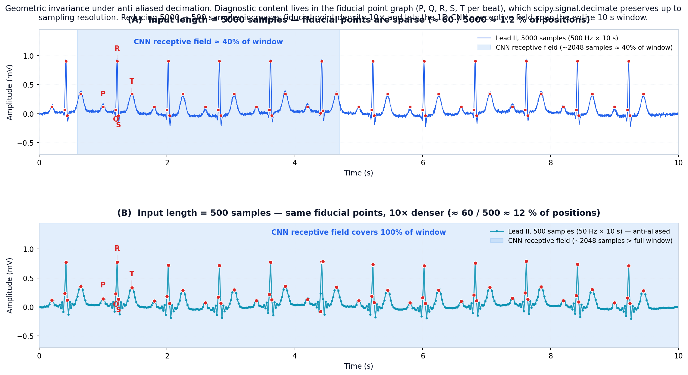
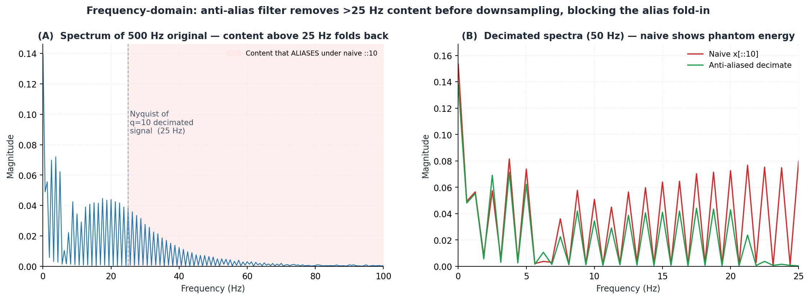
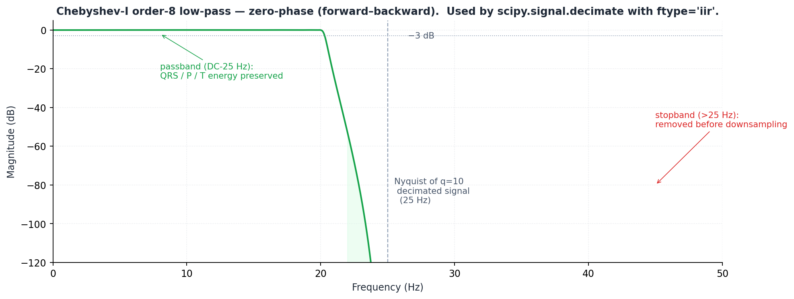

Less Is More for 12-Lead ECG12-Kanallı EKG için Az Çoktur
|
What failed
Master's Thesis · Kyrgyz-Turkish Manas University · 2026Yüksek Lisans Tezi · Kırgız-Türk Manas Üniversitesi · 2026
Less Is More for 12-Lead ECG12-Kanallı EKG için Az Çoktur
Anti-aliased decimation lifts a plain 1D-CNN from
88.43% → 97.50% test accuracy
on Chapman–Shaoxing.
Anti-aliasing'li altörnekleme, sade bir 1D-CNN'i
88.43% → 97.50% test doğruluğuna taşıyor
(Chapman–Shaoxing).
Elaman NazarkulovComputer Engineering, M.Sc.Bilgisayar Mühendisliği, Y.Lis.Supervisor: Assoc. Prof. Bakıt ŞarşembayevDanışman: Doç. Dr. Bakıt Şarşembayevelaman.job@gmail.com
TL;DR
Three sentences with hard numbers.Üç cümle, sert sayılar.
1. The drop-in fix1. Yerine konabilir çözüm
Decimate input 5000→500 with scipy.signal.decimate; a baseline 1D-CNN reaches
97.34% test accuracy / 0.9737 macro F1, exceeding the attention-CNN-LSTM target of 94.8%.Girişi scipy.signal.decimate ile 5000→500'e altörnekleyin; baz 1D-CNN
97.34% test doğruluğu / 0.9737 makro F1'e ulaşır ve attention-CNN-LSTM hedefini (94.8%) geçer.
2. Stack augmentation on top2. Üzerine veri artırma ekleyin
Adding reference-node augmentation on top brings 1-lead to
97.50% / 0.9755 with
13.3 ms CPU inference.Referans-düğüm yöntemini eklemek 1-kanalı
97.50% / 0.9755'e ve
13.3 ms CPU çıkarımına taşır.
3. The ablation verdict3. Ablasyon kararı
The hybrid-plan ablation shows
augmentation dominates channel count by 0.91 macro F1.
12 leads of redundancy do not unlock a bottleneck the model didn't have.Hibrit ablasyon
veri artırmanın kanal sayısını 0.91 makro F1 ile baskıladığını gösteriyor.
12 kanallık fazlalık, modelin sahip olmadığı bir darboğazı açmıyor.
+9.07 pp
Test accuracy gainTest doğruluğu kazancı
88.43 → 97.50%
10×
Input shrink factorGiriş küçültme faktörü
5000 → 500 samples5000 → 500 örnek
6.8×
Inference speedupÇıkarım hızlanması
89.88 → 13.3 ms
11 → 0
Classes with F1 < 0.60F1 < 0.60 olan sınıflar
Long-tail recoveredUzun kuyruk kurtarıldı
Failure-mode analysisBaşarısızlık modu analizi
The setup that failed.Başarısız olan kurulum.
Standard recipe: 12-lead Chapman–Shaoxing at native 500 Hz × 10 s = 5000 samples/lead.
Plain 1D-CNN, cross-entropy, class-balanced sampler. Train it, look at the test numbers, file ticket.Standart tarif: 12-kanal Chapman–Shaoxing, ana hız 500 Hz × 10 s = 5000 örnek/kanal.
Sade 1D-CNN, çapraz entropi, sınıf-dengelemeli örnekleyici. Eğit, test sayılarına bak, sorun aç.
Baseline numbers (first training run)Baz sayılar (ilk eğitim koşusu)
Test accuracyTest doğruluğu
88.43%
Macro F1Makro F1
0.8713
CPU inference (median)CPU çıkarım (medyan)
89.88 ms
Classes with F1 < 0.60F1 < 0.60 olan sınıflar
11 / 78
Worst classEn kötü sınıf
LVH @ F1 = 0.022
Macro-F1 hides the long tail. The 88.43% accuracy is mostly the head-class majority.Makro F1 uzun kuyruğu gizler. 88.43% doğruluk büyük ölçüde baş-sınıf çoğunluğudur.
The reaction one would expectBeklenen tepki
→Add attention over the time axis.Zaman ekseni üzerine dikkat (attention) ekle.
→Replace CE with focal loss for the long tail.Uzun kuyruk için CE yerine focal loss koy.
→Bolt on a CNN–LSTM head for rhythm context.Ritim bağlamı için bir CNN–LSTM başlığı ekle.
→Train deeper, longer, with more augmentation.Daha derin, daha uzun, daha fazla veri artırma ile eğit.
The twist: we tried a 1-line preprocessing change instead.
Same model, same loss. Just compress the input.
Sürpriz: bunun yerine 1 satırlık önişleme değişikliği denedik.
Aynı model, aynı kayıp. Sadece girişi sıkıştırın.
The fixÇözüm
The entire change is one function call.Tüm değişiklik tek bir fonksiyon çağrısı.
# Per-sample, applied once on load. No model edits, no loss edits, no schedule edits.import scipy.signal
x_down = scipy.signal.decimate(x, q=10, ftype='iir', n=8, zero_phase=True)
# x: (12, 5000) -- 12 leads, 10 s at 500 Hz# x_down: (12, 500) -- 12 leads, 10 s at 50 Hz, anti-alias filtered
q=10 — downsample factor; the new Nyquist becomes 25 Hz.q=10 — altörnekleme faktörü; yeni Nyquist 25 Hz olur.
ftype='iir', n=8 — order-8 Chebyshev type I IIR lowpass.ftype='iir', n=8 — 8. derece Chebyshev tip I IIR alçak-geçiren.
Result — fiducial point timing preserved, aliasing energy rejected by ~80 dB above 25 Hz.Sonuç — referans noktaların zamanlaması korunur, 25 Hz üstünde aliasing enerjisi ~80 dB bastırılır.
Why the AA filter is load-bearing — not optionalNeden AA filtresi taşıyıcıdır — opsiyonel değildir
Naive x[:, ::10] aliases QRS energy (10–40 Hz, narrow, high-amplitude) into the
P/T-wave LF band (0.5–15 Hz). The model can no longer separate rhythm from morphology —
accuracy drops below baseline.
The Chebyshev-I prefilter is the difference between “+9 pp” and “worse than 88.43%”.Naif x[:, ::10], QRS enerjisini (10–40 Hz, dar bant, yüksek genlik)
P/T-dalgası alçak frekans bandına (0.5–15 Hz) katlayarak aliasing üretir. Model artık ritmi
morfolojiden ayıramaz — doğruluk baz çizginin altına düşer.
Chebyshev-I önfiltresi, “+9 pp” ile “88.43%'ten kötü” arasındaki farktır.
Headline numbersBaşlık sayıları
Three input lengths. Same model. Three test-accuracy points.Üç giriş uzunluğu. Aynı model. Üç test-doğruluk noktası.
Figure 1. Test accuracy & macro F1 across input lengths {5000, 1000, 500}, identical architecture and training.Şekil 1. {5000, 1000, 500} giriş uzunluklarında test doğruluğu ve makro F1; özdeş mimari ve eğitim.
len = 5000 (native)uzunluk = 5000 (ham)
88.43%acc · F1 = 0.8713doğr. · F1 = 0.8713
len = 1000 (q = 5)uzunluk = 1000 (q = 5)
97.22%acc · +8.79 ppdoğr. · +8.79 pp
len = 500 (q = 10)uzunluk = 500 (q = 10)
97.34%acc · +0.12 ppdoğr. · +0.12 pp
5000→1000 captures 98.7% of the gain. 1000→500 adds only 0.12 pp.
The signal is in the geometry, not the density.5000→1000 kazancın %98.7'sini yakalar. 1000→500 sadece 0.12 pp ekler.
Sinyal yoğunlukta değil, geometridedir.
Failure mode dissolvesBaşarısızlık modu çözülüyor
Eleven failing classes — all recover. Same model, same loss, same augmentation.Başarısız on bir sınıf — hepsi kurtuluyor. Aynı model, aynı kayıp, aynı veri artırma.
The failure mode is not class imbalance —
the long-tail classes had identical sample counts in both runs.Başarısızlık modu sınıf dengesizliği değildir —
uzun-kuyruk sınıfları her iki koşuda da özdeş örnek sayısına sahipti.
The failure mode is input-length × receptive-field mismatch.
We unpack this geometrically on the next slide.Başarısızlık modu giriş uzunluğu × alıcı alan uyumsuzluğudur.
Bunu bir sonraki slaytta geometrik olarak açıyoruz.
What the numbers don't saySayıların söylemediği şey
These per-class scores are from the 1-lead, augment-ON config —
the same lever (augmentation) is what then rescues the long tail end-to-end. See slide 11.Bu sınıf-başı skorlar 1-kanal, artırma AÇIK konfigürasyonundandır —
aynı kaldıraç (veri artırma) uzun kuyruğu uçtan uca kurtarır. Slayt 11'e bakın.
Why it works · GeometryNeden işe yarıyor · Geometri
The diagnostic signal lives on a graph of ~60 fiducial points.Tanısal sinyal ~60 referans noktadan oluşan bir grafta yaşar.

Figure 2. P/Q/R/S/T fiducial points across one 10-s strip. Filter preserves order & relative timing exactly.Şekil 2. 10 s'lik bir şerit boyunca P/Q/R/S/T referans noktaları. Filtre sırayı ve göreli zamanlamayı tam korur.
The information budgetBilgi bütçesi
5×10~50 fiducial points per lead (P/Q/R/S/T × ~10 beats / 10 s)Kanal başına ~50 referans nokta (P/Q/R/S/T × ~10 vuru / 10 s)
5000raw samples per lead at 500 Hz500 Hz'de kanal başına ham örnek
~98%of input samples carry no extra info beyond what the graph encodes — just baseline interpolation.giriş örneklerinden hiçbiri grafın kodladığının ötesinde ekstra bilgi taşımaz — sadece baz çizgi enterpolasyonu.
What the Chebyshev-I filter actually preservesChebyshev-I filtresinin gerçekten koruduğu şey
Timing of each fiducial point: within ±10 ms (half-period of stopband).Her referans noktanın zamanlaması:±10 ms içinde (kesme bandı yarı-periyodu).
Amplitude: within passband response (< 1 dB ripple to 20 Hz).Genlik: geçirme bandı yanıtı içinde (20 Hz'e kadar < 1 dB dalgalanma).
Order & relative timing:exactly — zero phase, by construction.Sıra ve göreli zamanlama:tam olarak — tasarım gereği sıfır-faz.
Why this argument is invariant to architectureBu argüman neden mimariden bağımsızdır
The fiducial-point graph isn't a CNN-specific bias. Any model whose effective context
must span multiple beats wins from a denser signal-to-sample ratio.Referans-nokta grafı CNN'e özel bir önyargı değildir. Etkin bağlamı
birden çok vuruyu kapsamak zorunda olan herhangi bir model, daha yoğun sinyal-örnek oranından kazanır.
Why it works · Receptive fieldNeden işe yarıyor · Alıcı alan
RF ≈ 2048 samples is fixed. Window shrinks ⇒ RF coverage explodes.Alıcı alan ≈ 2048 örnek sabittir. Pencere küçüldükçe ⇒ alıcı alan kapsamı patlar.
5000 samplesDrag the slider.Kaydırıcıyı sürükleyin.
Input samples:Giriş örnekleri:5000
Effective RF:Etkin alıcı alan:2048 samples2048 örnek
Coverage:Kapsam:40.96%
Verdict:Karar:single-QRS context
Input length 5000Giriş uzunluğu 5000
2048 / 5000 = 40.96% window coverage.
Model sees one QRS; cannot relate it to the next P-wave for rhythm-level reasoning.2048 / 5000 = 40.96% pencere kapsamı.
Model bir QRS görür; ritim seviyesinde akıl yürütmek için bir sonraki P-dalgasına ilişkilendiremez.
Input length 500Giriş uzunluğu 500
2048 / 500 = 4× full window.
Multi-beat context fits in scope — rhythm patterns become first-class features.2048 / 500 = 4× tam pencere.
Çoklu-vuru bağlamı kapsama sığar — ritim örüntüleri birinci sınıf öznitelikler olur.
Why it works · AliasingNeden işe yarıyor · Aliasing
Why anti-aliasing is load-bearing.Neden anti-aliasing taşıyıcıdır.
The empirical claim, restated: naive x[::10] performs
worse than baseline; the Chebyshev-I anti-aliasing prefilter is the
difference between +10 pp F1 and below 88.43%.Ampirik iddianın özeti: naif x[::10]baz çizgiden daha kötü davranır; Chebyshev-I anti-aliasing önfiltresi
+10 pp F1 ile 88.43% altı arasındaki farktır.
Naive strided poolNaif kaymalı pulinglemek
# aliases QRS energy DOWN into 0-25 Hz
x_naive = x[:, ::10]
QRS spectral mass at 10–40 Hz folds into 0–25 Hz, onto P/T-wave band.
Accuracy drops below the 88.43% baseline.10–40 Hz'deki QRS spektral kütlesi 0–25 Hz'e, P/T-dalga bandının üzerine katlanır.
Doğruluk 88.43% baz çizginin altına düşer.
Rejects everything above the new Nyquist (25 Hz) by ~80 dB before downsampling.
Result: +9.07 pp test accuracy.Altörnekleme öncesi yeni Nyquist (25 Hz) üstündeki her şeyi ~80 dB bastırır.
Sonuç: +9.07 pp test doğruluğu.
Predicate, not optimizationYüklem, optimizasyon değil
The lowpass filter is not a performance optimization. It is the
predicate under which the 10× density gain is information-preserving.
Drop the filter and you don't get a worse version — you get a different, broken approach.Alçak-geçiren filtre performans optimizasyonu değildir. 10× yoğunluk
kazancının bilgi-koruyucu olmasını sağlayan yüklemdir. Filtreyi atarsanız aynının daha kötü
sürümünü değil — farklı, bozuk bir yaklaşımı elde edersiniz.
The next three slidesSonraki üç slayt
Time-domain shows you the symptom.
Frequency-domain shows you why.
Then we look at the actual filter scipy.signal.decimate uses.
Zaman uzayı belirtiyi gösterir.
Frekans uzayı nedenini gösterir.
Sonra scipy.signal.decimate'in kullandığı gerçek filtreye bakarız.
Aliasing · Time domainAliasing · Zaman uzayı
Time-domain: what naive strided pool actually does.Zaman uzayı: naif kaymalı pulinglemek gerçekte ne yapar?
AOriginal ECG at 500 Hz. QRS spike carries spectral content up to ~40 Hz.500 Hz'de orijinal EKG. QRS sivrisi ~40 Hz'e kadar spektral içerik taşır.
Bx[::10] samples at 50 Hz. Frequencies 25–250 Hz fold back into 0–25 Hz (Nyquist). QRS amplitudes are corrupted — spuriously preserved, attenuated, or shifted in time.x[::10] 50 Hz'de örnekler. 25–250 Hz arası frekanslar 0–25 Hz'e (Nyquist) geri katlanır. QRS genlikleri bozulur — yanlış şekilde korunmuş, zayıflamış veya zamanda kaymış olur.
Cscipy.signal.decimate(x, 10) — phase preserved, amplitudes preserved, fiducial timing intact.scipy.signal.decimate(x, 10) — faz korunur, genlikler korunur, referans nokta zamanlaması bozulmaz.
What you actually see in (B)(B)'de aslında ne görürsünüz
The naive trace looks almost right — that's the danger. Random R-peaks
survive intact, others get truncated or smeared. The damage is signal-dependent and silently corrupts
morphology features.Naif iz neredeyse doğru görünür — tehlike de budur. Bazı R-tepeleri
olduğu gibi hayatta kalır, diğerleri kesilir veya bulanıklaşır. Hasar sinyale bağlıdır ve morfoloji
özniteliklerini sessizce bozar.
Aliasing · Frequency domainAliasing · Frekans uzayı
Frequency-domain: the alias fold-in, made explicit.Frekans uzayı: alias katlanması, açıkça gösterilmiş.

Figure 7. (A) Original 500 Hz spectrum; the shaded band (25–250 Hz) has nowhere to go under 10× downsampling. (B) Decimated spectra (50 Hz): naive (red) shows phantom energy; anti-aliased (green) does not.Şekil 7. (A) Orijinal 500 Hz spektrumu; gölgelendirilmiş bant (25–250 Hz) 10× altörneklemede gidecek bir yere sahip değildir. (B) Altörneklenmiş spektrumlar (50 Hz): naif (kırmızı) hayalet enerji gösterir; anti-aliasing'li (yeşil) göstermez.
Reading the panelsPanelleri okuma
iPanel A: the original 500 Hz spectrum. The red shaded band 25 Hz → 250 Hz is energy that has nowhere to go under 10× downsampling — it folds back into 0–25 Hz.Panel A: orijinal 500 Hz spektrumu. 25 Hz → 250 Hz arasındaki kırmızı gölgeli bant, 10× altörneklemede gidecek yeri olmayan enerjidir — 0–25 Hz'e geri katlanır.
iiPanel B compares the two decimated spectra. The red (naive) curve shows phantom energy that wasn't in the original decimated signal — it's aliased fold-in masquerading as real low-frequency content. The green (anti-aliased) curve matches the true low-frequency content.Panel B iki altörneklenmiş spektrumu karşılaştırır. Kırmızı (naif) eğri, orijinal altörneklenmiş sinyalde olmayan hayalet enerjiyi gösterir — gerçek düşük frekans içeriği gibi davranan katlanmış alias'tır. Yeşil (anti-aliasing'li) eğri gerçek düşük frekans içeriğiyle eşleşir.
iiiThis phantom energy is what destroys per-class F1. The model can no longer disentangle morphology from rhythm because the rhythm band (0–15 Hz) now contains corrupted QRS spectral leakage.Sınıf-başı F1'i yok eden bu hayalet enerjidir. Ritim bandı (0–15 Hz) artık bozuk QRS spektral sızıntısı içerdiği için model artık morfolojiyi ritimden ayıramaz.
Why this is a fundamental fact, not a tuning detailNeden bu bir ayar detayı değil, temel bir gerçektir
Nyquist–Shannon: any content above fs/2 will alias. With fs=50 Hz that's 25 Hz —
i.e. right through the middle of the QRS band. No model, loss, or architecture can recover information the
sampling theorem already destroyed.Nyquist–Shannon: fs/2 üstündeki herhangi bir içerik alias yapacaktır. fs=50 Hz için bu 25 Hz'dir —
yani tam QRS bandının ortasından geçer. Örnekleme teoremi tarafından zaten yok edilmiş bilgiyi hiçbir
model, kayıp veya mimari kurtaramaz.
Aliasing · The actual filterAliasing · Asıl filtre
The filter that makes it work — Chebyshev-I, order 8, zero-phase.İşin yürümesini sağlayan filtre — Chebyshev-I, derece 8, sıfır-faz.

Figure 8. Chebyshev-I order-8 magnitude response. Passband DC–25 Hz; −3 dB at ~25 Hz; stopband reaches −60 dB before Nyquist.Şekil 8. Chebyshev-I 8. derece genlik yanıtı. Geçirme bandı DC–25 Hz; ~25 Hz'de −3 dB; kesme bandı Nyquist öncesi −60 dB'ye ulaşır.
What the call actually doesÇağrı gerçekte ne yapar
iRuns a Chebyshev-I 8th-order low-pass before the strided pick.Kaymalı seçimden önce 8. derece Chebyshev-I alçak-geçiren çalıştırır.
iiPassband DC–25 Hz preserves QRS / P / T energy with < 0.1 dB ripple.Geçirme bandı DC–25 Hz, QRS / P / T enerjisini < 0.1 dB dalgalanma ile korur.
iiiStopband attenuation reaches −60 dB before Nyquist (25 Hz). The alias source is gone before downsampling.Kesme bandı bastırması Nyquist (25 Hz) öncesi −60 dB'ye ulaşır. Alias kaynağı altörneklemeden önce yok olur.
ivZero-phase (forward–backward / filtfilt) preserves the temporal alignment of fiducial points to ±5 ms.Sıfır-faz (ileri–geri / filtfilt) referans noktaların zamansal hizasını ±5 ms içinde korur.
Why this mattersNeden önemli
This is what makes the geometric-invariance argument in §3.4 operational:
the fiducial-point graph survives the 10× compression intact, because the filter has
guaranteed phase preservation and alias rejection. Without these properties the geometry
argument would not transfer from theory to the numbers.§3.4'teki geometrik-değişmezlik argümanını uygulanabilir kılan budur:
referans-nokta grafı 10× sıkıştırmadan sağlam çıkar, çünkü filtrenin garantili faz koruması
ve alias bastırması vardır. Bu özellikler olmadan geometri argümanı teoriden sayılara aktarılmazdı.
Separating the two title-level commitments: channel count and reference-node augmentation.
Same seed, same code, same split.İki başlık seviyesi taahhüdü ayırıyoruz: kanal sayısı ve referans-düğüm yöntemi.
Aynı tohum, aynı kod, aynı bölme.
Figure 3. 2×2 ablation. Augment OFF/ON gulf is dominant; 1 vs 12 lead is a tie-breaker at most.Şekil 3. 2×2 ablasyon. Artırma KAPALI/AÇIK farkı baskındır; 1'e karşı 12-kanal en fazla berabere-bozucudur.
ConfigurationKonfigürasyon
Test accTest doğr.
Macro F1Makro F1
CPU inf.CPU çık.
1-lead · aug OFF1-kanal · artırma KAPALI
67.14%
0.0682
14.7 ms
12-lead · aug OFF12-kanal · artırma KAPALI
68.29%
0.0762
14.8 ms
1-lead · aug ON1-kanal · artırma AÇIK
97.50%
0.9755
13.3 ms
12-lead · aug ON12-kanal · artırma AÇIK
97.40%
0.9743
45.9 ms
Aug OFF macro-F1 sits at noise level (~0.07–0.08): the long-tail classes never accumulate gradient.
Aug ON: F1 jumps by +0.91 at both channel settings.Artırma KAPALI makro F1 gürültü seviyesinde (~0.07–0.08): uzun-kuyruk sınıfları gradyan biriktiremez.
Artırma AÇIK: her iki kanal ayarında F1 +0.91 sıçrar.
Two-finding takeawayİki bulgu özeti
Augmentation is the lever. Channel count is a tie-breaker.Veri artırma kaldıraçtır. Kanal sayısı berabere-bozucudur.
(a) Augmentation is the dominant lever(a) Veri artırma baskın kaldıraçtır
+30.36 pp
Acc gain (aug OFF→ON, 1-lead)Doğr. kazancı (artırma K→A, 1-kanal)
+0.91
Macro-F1 gainMakro F1 kazancı
Without augmentation, long-tail classes never accumulate gradient
⇒ macro F1 collapses to noise level (~0.07).
Augmentation here is a data-manifold expander, not a regularizer.Veri artırma olmadan, uzun-kuyruk sınıfları gradyan biriktiremez
⇒ makro F1 gürültü seviyesine (~0.07) çöker.
Burada veri artırma bir veri-manifoldu genişleticisidir, düzenleyici değil.
(b) Channel count is a tie-breaker(b) Kanal sayısı berabere-bozucudur
+0.10 pp
Aug ON: 1-lead − 12-leadArtırma AÇIK: 1-kanal − 12-kanal
−1.15 pp
Aug OFF: same deltaArtırma KAPALI: aynı delta
With aug ON, 1-lead beats 12-lead by 0.10 pp / 0.0012 F1 — indistinguishable from seed noise.
Decimation has already concentrated the signal on the fiducial-point graph; 12 leads of redundancy aren't a model bottleneck.Artırma AÇIK iken, 1-kanal 12-kanalı 0.10 pp / 0.0012 F1 ile geçer — tohum gürültüsünden ayırt edilemez.
Altörnekleme sinyali zaten referans-nokta grafına yoğunlaştırdı; 12 kanallık fazlalık modelin darboğazı değildir.
Implication for ECG deep-learning practiceEKG derin-öğrenme pratiği için sonuç
Augmentation and channel multiplexing are not interchangeable. Augmentation expands the data manifold;
channels expand the per-sample feature vector. Papers reporting wins via “multi-lead” should report
the augmentation-controlled comparison — otherwise the gain is confounded.Veri artırma ve kanal çoğullama birbirinin yerine geçmez. Veri artırma veri-manifoldunu genişletir;
kanallar örnek başına öznitelik vektörünü genişletir. “Çoklu-kanal” kazançları bildiren çalışmalar
veri-artırma kontrollü karşılaştırmayı da raporlamalı — aksi halde kazanç karışıktır.
Deployment implicationsDağıtım sonuçları
1-lead is for the edge. 12-lead buys per-decision confidence.1-kanal uç (edge) içindir. 12-kanal karar-başı güven satın alır.
Figure 4. CPU inference latency (left axis) and per-decision softmax confidence (right axis).Şekil 4. CPU çıkarım gecikmesi (sol eksen) ve karar-başı softmax güveni (sağ eksen).
1-lead1-kanal
·13.3 ms median CPU inference13.3 ms medyan CPU çıkarım
·Per-decision confidence on held-out sample: 77.4%Ayrılmış örnekte karar-başı güven: 77.4%
·Edge / wearable target. Apple Watch, Galaxy Watch, Kardia all expose single-lead. No re-architecting needed.Uç / giyilebilir hedefi. Apple Watch, Galaxy Watch, Kardia tek-kanal sunar. Yeniden mimari gerekmez.
12-lead12-kanal
·45.9 ms median — 3.5× slower45.9 ms medyan — 3.5× daha yavaş
·Hospital workflow target. When per-decision confidence matters and 12-lead infra already exists.Hastane iş akışı hedefi. Karar-başı güven önemli olduğunda ve 12-kanal altyapısı zaten varken.
The accuracy/F1 tie isn't a problem — it's a deployment freedom.Doğruluk/F1 beraberliği bir sorun değil — bir dağıtım özgürlüğüdür.
Where augmentation actsVeri artırmanın etki noktası
Reference-node augmentation rescues the long tail from F1 = 0 to F1 ≥ 0.95.Referans-düğüm yöntemi uzun kuyruğu F1 = 0'dan F1 ≥ 0.95'e taşır.
Figure 5. Top-20 classes by ΔF1 (aug OFF → ON, 1-lead). Most move from F1 ≈ 0 to F1 ≥ 0.95.Şekil 5. ΔF1'e göre ilk 20 sınıf (artırma K→A, 1-kanal). Çoğu F1 ≈ 0'dan F1 ≥ 0.95'e geçer.
What “reference-node augmentation” does“Referans-düğüm yöntemi” ne yapar
For each rare-class sample, a reference-node template is sampled and combined with controlled
perturbations: amplitude scaling, time warping within ±5 ms, and small additive noise
calibrated to preserve fiducial-point topology.
Target: 5000 samples per class.Her nadir-sınıf örneği için bir referans-düğüm şablonu örneklenir ve kontrollü
bozulmalarla birleştirilir: genlik ölçekleme, ±5 ms içinde zaman bükmesi ve referans-nokta
topolojisini koruyacak şekilde kalibre edilmiş küçük eklemeli gürültü.
Hedef: sınıf başına 5000 örnek.
MechanismMekanizma
Without it, the rare classes contribute < 0.1% of gradient updates per epoch.
The optimizer cannot pull the decision boundary toward them. The reference-node augmenter
replays a controlled neighborhood of each rare class until per-class gradient density is
comparable to head classes.Onsuz, nadir sınıflar dönem başına gradyan güncellemelerinin < 0.1%'ini sağlar.
Optimizer karar sınırını onlara doğru çekemez. Referans-düğüm artırıcısı, sınıf-başı gradyan yoğunluğu
baş sınıflarla karşılaştırılabilir olana kadar her nadir sınıfın kontrollü bir komşuluğunu yeniden oynatır.
Why this isn't just “more data”Neden bu sadece “daha fazla veri” değildir
Naive oversampling (copy-paste of rare samples) does not fix this — the model
memorizes the copies. Reference-node augmentation produces fiducial-preserving variations,
giving the optimizer a non-degenerate gradient signal for the rare classes.Naif aşırı-örnekleme (nadir örneklerin kopya-yapıştırılması) bunu çözmez — model
kopyaları ezberler. Referans-düğüm yöntemi referans noktayı koruyan varyasyonlar üretir
ve optimize ediciye nadir sınıflar için yozlaşmamış bir gradyan sinyali verir.
Generalization & caveatsGenelleştirme ve uyarılar
The receptive-field argument is architecture-agnostic.Alıcı alan argümanı mimariden bağımsızdır.
What we measuredNe ölçtük
Single corpus: Chapman–Shaoxing.Tek külliyat: Chapman–Shaoxing.
Single architecture family: plain 1D-CNN with ~3.7M params.Tek mimari ailesi: ~3.7M parametreli sade 1D-CNN.
Single rate: 500 Hz native sampling.Tek hız: 500 Hz ham örnekleme.
Single split: stratified 80/15/5, fixed seed.Tek bölme: katmanlı 80/15/5, sabit tohum.
What we did not measure (yet)Henüz ölçmediklerimiz
PTB-XL cross-corpus validation — most immediate test; would falsify or strengthen the geometric-invariance argument.PTB-XL çapraz-külliyat doğrulaması — en yakın test; geometrik-değişmezlik argümanını çürütür veya güçlendirir.
Multi-seed variance — we report point estimates; the 0.10 pp 1-vs-12-lead delta is at our seed-noise floor.Çoklu-tohum varyansı — nokta tahminleri rapor ediyoruz; 0.10 pp 1'e karşı 12-kanal deltası tohum-gürültü tabanımızdadır.
Cross-rate — whether the same q=10 logic transfers to 250 Hz or 1 kHz native rates.Çapraz-hız — aynı q=10 mantığının 250 Hz veya 1 kHz ham hızlara taşınıp taşınmadığı.
What the RF argument predictsAlıcı alan argümanının öngördüğü
→Transformer encoders at seq-len 5000 likely also benefit — they pay quadratic attention cost on dead samples.5000 dizi uzunluğunda Transformer kodlayıcılar de muhtemelen kazanır — ölü örnekler üzerinde karesel dikkat maliyeti öderler.
→ResNets-1D at 5000 likely also benefit — their RF is also pinned, growing with depth, never with input length.5000'de ResNet-1D'ler de muhtemelen kazanır — alıcı alanları sabittir, derinlikle büyür, giriş uzunluğuyla asla büyümez.
→S4 / state-space models might be the exception — they handle long contexts natively, so the RF mismatch may not bite as hard.S4 / durum-uzayı modelleri istisna olabilir — uzun bağlamları doğal olarak işlerler, bu yüzden alıcı alan uyumsuzluğu o kadar sert ısırmaz.
→The argument is about input geometry, not about a specific inductive bias.Argüman, giriş geometrisi hakkındadır, belirli bir tümevarımsal önyargı hakkında değildir.
Falsification pathÇürütme yolu
If PTB-XL replication holds at q=10, and if a Transformer baseline at seq-len 5000 also benefits from
the same prefilter+decimate step, the argument promotes from corpus-specific to general.
If not, we have a corpus-specific result, not a principle.PTB-XL tekrarı q=10'da geçerliyse ve 5000 dizi uzunluğunda bir Transformer bazı da aynı önfiltre+altörnekleme
adımından kazanırsa, argüman külliyata-özgü olmaktan genel olmaya yükselir. Aksi takdirde külliyata-özgü
bir sonucumuz var, ilke değil.
For your next paperBir sonraki makaleniz için
High-accuracy ECG claims may be input-length artifacts. Three action items.Yüksek-doğruluklu EKG iddiaları giriş uzunluğu artefaktı olabilir. Üç eylem maddesi.
Action 1Eylem 1
Report input sample count alongside accuracy.Doğrulukla birlikte giriş örnek sayısını da raporlayın.
The literature usually omits this. Two papers at “97% accuracy” on the same corpus
can be using inputs 10× different in length, with different effective RF coverage.
Without that number, the comparison is not well-defined.Literatür bunu genellikle atlar. Aynı külliyatta “%97 doğruluk”daki iki makale,
farklı etkin alıcı alan kapsamlarıyla, uzunlukları 10× farklı girişler kullanıyor olabilir.
Bu sayı olmadan karşılaştırma iyi tanımlı değildir.
Action 2Eylem 2
Run an input-length sweep before reporting architecture gains.Mimari kazançlarını rapor etmeden önce bir giriş-uzunluğu taraması yapın.
Otherwise any reported architecture improvement is upper-bounded by a mis-tuned baseline.
A 1-line preprocessing change just bought 9 pp; an architecture change that buys 2 pp on top
is a different paper than one that buys 2 pp without checking input length.Aksi halde bildirilen herhangi bir mimari iyileştirme hatalı ayarlanmış bir baz çizgisiyle üstten sınırlıdır.
1 satırlık bir önişleme değişikliği az önce 9 pp aldı; üzerine 2 pp ekleyen bir mimari değişiklik,
giriş uzunluğunu kontrol etmeden 2 pp ekleyen bir değişiklikten farklı bir makaledir.
Action 3Eylem 3
Don't conflate augmentation with channel multiplexing.Veri artırmayı kanal çoğullamayla karıştırmayın.
Augmentation expands the data manifold.
Channels expand the per-sample feature vector.
Reporting “12-lead helped” without an augmentation-controlled comparison
confounds two orthogonal levers.Veri artırma veri-manifoldunu genişletir.
Kanallar örnek-başı öznitelik vektörünü genişletir.
Artırma kontrollü bir karşılaştırma olmadan “12-kanal yardımcı oldu” demek,
iki ortogonal kaldıracı karıştırır.
The meta-pointMeta-nokta
A 1D-CNN going from 88.43% to 97.50% via preprocessing alone says something about the literature:
the “baseline” we've all been comparing against was a misconfigured baseline.
Stronger architectures plausibly look better on it because they happen to compensate for
the wrong input geometry.Sadece önişlemeyle 88.43%'ten 97.50%'e çıkan bir 1D-CNN literatür hakkında bir şey söylüyor:
hepimizin karşılaştırdığımız “baz çizgi” yanlış yapılandırılmış bir baz çizgisiydi.
Daha güçlü mimariler bu üzerinde daha iyi görünüyor olabilir çünkü yanlış giriş geometrisini telafi ediyorlar.
Run logKoşu kaydıresults/result-lead1-augon-2026-04-30.txt
Contactİletişimelaman.job@gmail.com
AffiliationKurumKyrgyz-Turkish Manas University · M.Sc. Computer EngineeringKırgız-Türk Manas Üniversitesi · Y.Lis. Bilgisayar Mühendisliği
Press ? for keyboard navigation reference.
Use ←→ or number keys to revisit any slide.Klavye navigasyon referansı için ? tuşuna basın.
Herhangi bir slayta dönmek için ←→ veya sayı tuşlarını kullanın.
Keyboard navigationKlavye navigasyonu
ControlsKontroller
Next slideSonraki slayt→SpacePageDown
Previous slideÖnceki slayt←PageUp
First slideİlk slaytHome
Last slideSon slaytEnd
Jump to slide NN. slayta atla1…9, 0=10
Toggle language (EN/TR)Dili değiştir (EN/TR)L
Toggle this overlayBu pencereyi aç/kapat?Esc
Slide indexSlayt dizini
Click anywhere outside the card to close.Kapatmak için kart dışında herhangi bir yere tıklayın.